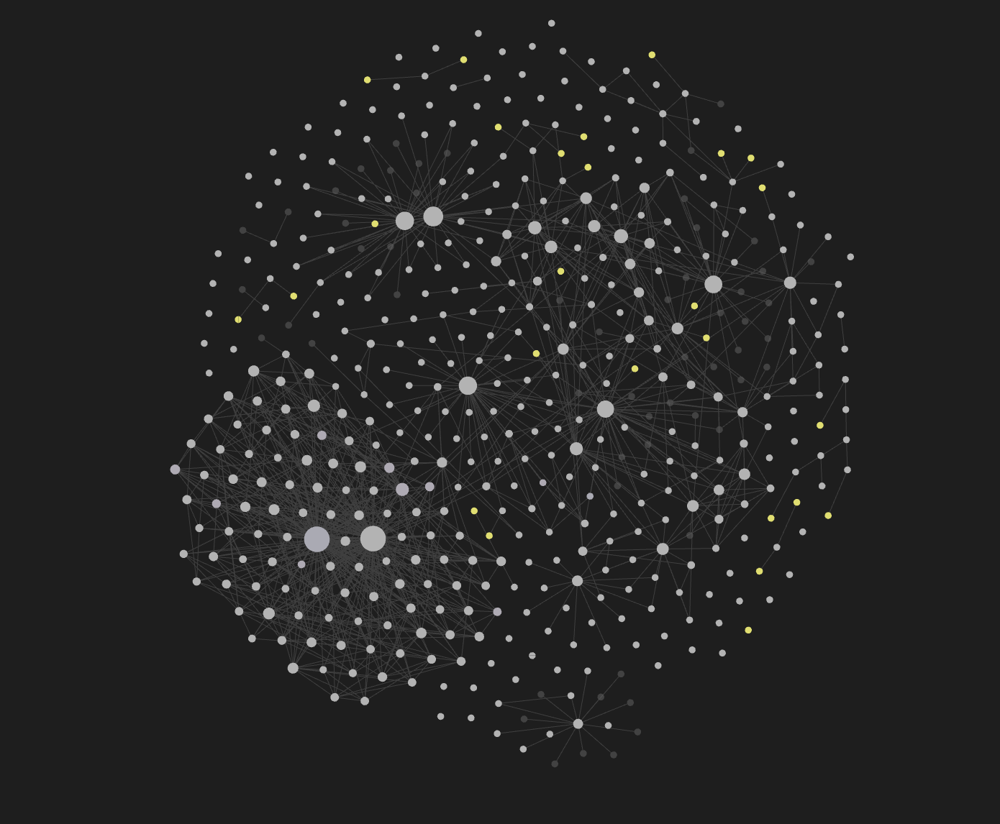

Video
Sora Web App
Central tool for testing atmospheres, worlds, and staging hypotheses before the final selection.
- Role
- Explore cinematic scenes and compare multiple visual directions.
- Input
- Prompts, reframings, world references, traveler, monolith, suns.
- Output
- Previews, candidate clips, and demonstration material.
- Why
- The fastest way to test an impossible world and its camera language.
- Limits
- Rare worlds remain unstable; motion coherence varies.
- Concrete result
- Direct basis for the Soulborn trailer and process captures.
Soulborn
Generation
Int Bulk Generation
Designed to show how one intention can produce several close images with readable small variations.
- Role
- Produce image batches from a chosen direction.
- Input
- Prompt, optional references, and a batch-generation logic.
- Output
- Variant grids to document through screenshots.
- Why
- Very effective for explaining the path from one idea to a selection.
- Limits
- Without selection, the volume quickly becomes opaque for a jury.
- Concrete result
- Placeholder already planned for both Soulborn and Tarot captures.
Soulborn
Tarot
Variations
Int Bulk Iterations
Lets you generate families of variants quickly in order to compare useful micro-differences.
- Role
- Multiply iterations without restarting from scratch every time.
- Input
- Prompt or existing base, iteration parameters, targeted visual direction.
- Output
- Series of video or image variants to sort through.
- Why
- Ideal for showing process without drowning the page in too many final assets.
- Limits
- It still needs editorial selection, otherwise everything starts to look alike.
- Concrete result
- Concrete mini examples for Tarot and proof of controlled iteration.
Soulborn
Tarot
Pipeline
NanoBanana / bulk-editing
Local Python pipeline to extract JSON, merge it with two references, regenerate an image, and remove the Gemini watermark.
- Role
- Industrialize a reference-based visual editing workflow.
- Input
- Source image, two JSON + image references, YAML job, Gemini models.
- Output
- Run artifacts, cleaned images, manifests, and event logs.
- Why
- Useful for explaining the technical depth behind some image series.
- Limits
- A more technical workflow, less immediate to read without context.
- Concrete result
- Pipeline evidence in the bulk-editing folder and its timestamped runs.
Tarot
Editing
CapCut
Editing turns disparate outputs into a readable, paced, presentable trailer.
- Role
- Assemble, trim, pace, and prioritize the visual material.
- Input
- Selected clips, Suno music, trailer logic, transitions.
- Output
- Final trailer version and a screen recording of the edit.
- Why
- This is where the project becomes narrative rather than accumulation.
- Limits
- Editing does not save confused material; it reveals the real choices.
Soulborn
App
VS Code
Workspace for developing the tarot experience, with several versions to compare in order to show evolution.
- Role
- Build and evolve the interactive tarot experience.
- Input
- Prompting, UX decisions, previous versions, draw logic.
- Output
- Interactive app, VS Code captures, and a visible progression history.
- Why
- Shows that the project is not only an image gallery.
Tarot
Research
Obsidian
Obsidian acts as a research memory, idea journal, and proof of documentary depth.
- Role
- Structure notes, references, tracks, and process documentation.
- Input
- Brainstorming, technical documentation, inspirations, project links.
- Output
- Dated notes, graphs, preparation traces, and pipeline notes.
- Why
- The graph immediately shows the scale of the research.

Soulborn
Tarot
LLM
ChatGPT
Used to formulate prompts, clarify intentions, and help write parts of the process.
- Role
- Co-write, reframe, and expand creative directions.
- Input
- Narrative intentions, styles, constraints, and phrasing requests.
- Output
- Prompts, wording variants, and writing material.
- Why
- Fast for opening options and sharpening a voice.
Soulborn
Tarot
LLM
Codex
Used here to structure the render page, synthesize project material, and prepare a presentation that can actually be shown.
- Role
- Read source material, structure the story, and build the HTML/CSS/JS site.
- Input
- Notes, local paths, available assets, and the user's editorial decisions.
- Output
- Bilingual page, placeholders, and final-render organization.
- Why
- Helps turn diffuse brainstorming into a concrete structure.
Soulborn
Tarot
LLM
Claude Code
Mentioned as another assistant used on the same project, especially around the Obsidian vault.
- Role
- Help on some branches of the project and on documentary material.
- Input
- Obsidian vault context, reflection, and documentary organization.
- Output
- Documentation complements and textual iteration.
- Why
- Helps show an ecosystem of tools rather than a single tool.
Soulborn
Tarot
Music
Suno
Source of the trailer music, documented through a specific prompt already kept in the folder.
- Role
- Give rhythm and sonic coherence to the final edit.
- Input
- Music directions, intensity references, and atmosphere cues.
- Output
- Selected track for the Soulborn trailer transitions.
- Why
- The music helps hold the successive worlds together.
- Limits
- It must stay in service of the edit, not the other way around.
- Concrete result
- Music prompt already integrated into the Soulborn section.
Soulborn